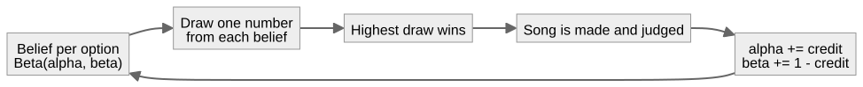

How the agents learn
Source: music_engine_framework_layer/mhraaga_engine/agentic/evolve.py and critics.py. State is kept in agentic/data/policy.json.
One round, step by step
- Choose. For a language, each producer draws one random number from the Beta belief of every option it has and picks the option with the highest draw. Good options win more often; options with little evidence still get a chance, because their belief is wide.
- Compose. The composer turns the seven genes into a song.
- Judge. The eight critics score it. The song's reward is the weighted sum (weights in the agents page).
- Quality per agent. Each producer's quality is the mean of the scores of the critics that judge its work (for example
tempois judged byrhythmandlibrary_affinity). - Share the credit. Kalkee's Shapley function splits the song's reward among the producers (below).
- Update. For the option a producer picked, its belief moves:
alpha += pandbeta += 1 - p, wherepis its credit scaled so that an equal share equals the song's own reward and clamped to 0 to 1. Next time that option is a little more or less likely to be drawn.
Thompson sampling in one picture
Every option holds a Beta(alpha, beta) belief that starts at Beta(1, 1), "no idea". Each success adds to alpha, each failure to beta. The mean is alpha / (alpha + beta). Drawing from the belief, not using the mean, is what keeps the agents exploring.

The Shapley credit split
A song is the work of seven agents together. Giving the whole reward to the last agent, or splitting it evenly, would teach them the wrong thing. The Shapley value gives each agent the average of what it adds across every order in which the agents could have joined.
- The value of a group is modelled as a noisy-OR of its members' qualities: v(S) = 1 - product(1 - quality_i). Two decent agents together are worth more than either alone, but not the sum.
- With up to 8 agents the value is computed exactly (there are 7 here); above that a Monte Carlo estimate is used.
- The reward is split in proportion to each agent's share, so the credits add up to the reward exactly.
- If every quality is about zero, the reward is split evenly so nothing divides by zero.
The catalogue
- At most 100 songs, about 14 per language (Hindi, Marathi, English, Telugu, Gujarati, Kannada, Tamil).
- A new song enters if its language has room, or if its reward beats the weakest song of that language by more than 0.003 (then it replaces it).
- Improvement: the weakest songs of each language are re-made with new seeds and one gene re-drawn from the beliefs; a variant replaces its parent only if it scores higher.
- At least three spoken poems per language are kept.
What this does and does not do
It lifted the mean critic reward from 0.862 to 0.969 in the first runs. That is a number about the critics' rules. It is not a measure of how good a song sounds to a person. Listen, and use the Create page's Styles box to steer what the live site makes.